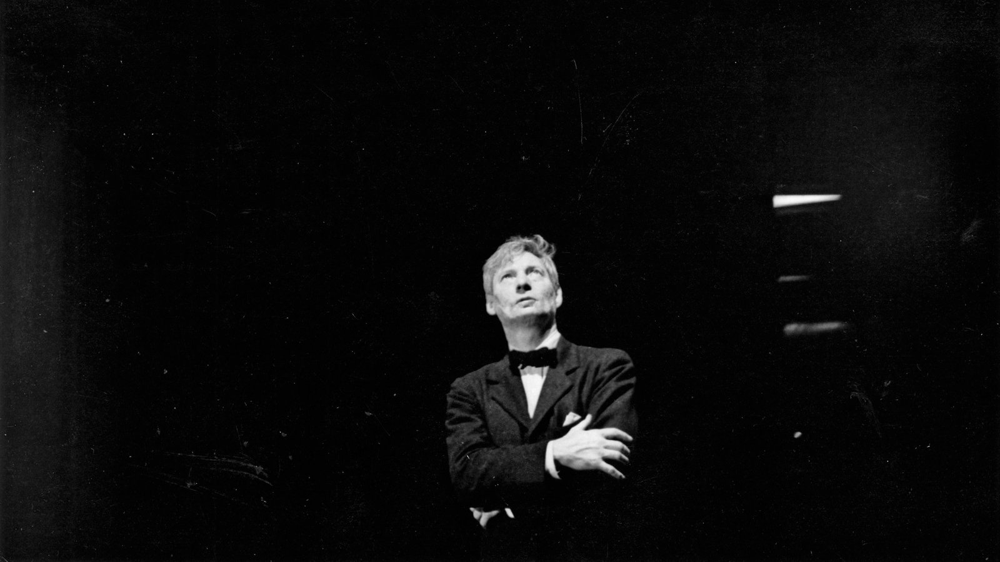

Louis Khan: He Who Built Monuments
“Every building must have… it’s own soul.”
- Louis Kahn -

Giving soul to architecture, a feat only few can achieve like Louis Kahn.
“Every building must have… it’s own soul.”
- Louis Kahn -
Giving soul to architecture, a feat only few can achieve like Louis Kahn.
On February 20, 1901, Louis Isadore Kahn was born in the name of Itze-Leib Schmuilowsky in Estonia. He grew up in a poor Jewish family during the then-on reign of the Russian Empire. When he was three, he got curious with live coals, which he then put on his apron. Unfortunately, this fascination caused his apron to burn, leaving a permanent scar on his face.
In 1906, when the Russo-Japanese war sparked, Kahn’s family emigrated to the United States, fearing that the army would recall his father to service. This transition hasn’t been easy for the family. It has even been recalled that the family couldn't afford a pencil, and young Kahn made drawings from burnt twigs which he then sold for a few pennies.
On May 15, 1914, Kahn’s family became naturalized U.S. citizens. And the following year, 1915, his father officially changed their family name to Kahn.
Kahn studied Bachelor of Architecture at the University of Pennsylvania School of Fine Arts under Paul Philippe Cret, who adheres to the Beaux-Arts tradition. After his graduation in 1914, Kahn started his professional career as a senior draftsman in the office of the city architect John Molitor.
In 1928, Kahn traveled to Europe and visited medieval places, like the walled City of Carcassonne and the old castles of Scotland. After this tour in 1929, he returned to the U.S. and worked under his former professor Paul Philippe Cret. Later, he also worked in the office of Zantzinger, Borie, and Medary in Philadelphia.
In 1930, Kahn married Esther Virginia Israeli and moved to his in-laws’ house, where he’ll live for the following 37 years.

1951–1953. Kahn got the commission to design the extension for the Yale University Art Gallery in New Haven, Connecticut. This is one of his first notable commissions, which plastered his name in architecture.

1957–1965. Kahn was commissioned to design the Richards Medical Research Laboratories at the University of Pennsylvania. There he gets to showcase the style he was so fond of - a derivation of ancient monumental architecture into the modern world.

1959–1965. The Salk Institute in La Jolla, California, is considered a masterpiece among Kahn’s works. It emphasizes the horizontality of the design with a center plane cutting through two masses where the vital spaces are located. The linear water feature makes an astonishing view as it meets with the horizon of the Pacific Ocean.

1959–1969. The First Unitarian Church of Rochester, New York, is among the twentieth century's greatest religious structures. It is designed through an interplay of light and shadow through narrow and circular windows.

1961.Indian Institute of Management (IMM) in Ahmedabad, India.

1960-1965. Eleanor Donnelly Erdman Hall, Bryn Mawr College, Pennsylvania, was inspired by a Scottish castle.

1965–1972. Phillips Exeter Academy Library, Exeter, New Hampshire. This piece was awarded the Twenty-five Year Award by the American Institute of Architects in 1997. This work features an awe-inspiring atrium lighting the masses of book corridors.

1967–1972. The Kimbell Art Museum in Fort Worth, Texas, features a series of barrel vaults that are intricately designed to entrain light within its interiors.

1972–1974. Franklin D. Roosevelt Four Freedoms Park, Roosevelt Island, New York, construction completed in 2012

1962-1974. The Jatiyo Sangshad Bhaban (National Assembly Building) in Bangladesh was Kahn's last project. It was developed from 1962 to 1974, and he never saw its completion. This building is part of the national complex designed by Kahn. Robert McCarter, the author of Louis I. Kahn, considers this as "...one of the twentieth century's greatest architectural monuments, and is without question Kahn's magnum opus."
In 1974, Kahn died of a heart attack in a restroom at Penn Station in Manhattan after just returning from a work trip from Ahmedabad, India. Due to police miscommunications in both New York City and Philadelphia, his wife was only notified of his death three days later.
Khan died without much left on his finances. Unknown to many, his office has been struggling financially, but amidst this, Khan stayed true to his passion for delivering his architecture to the world.
Khan can be considered a philosopher aside from being an architect. He perfected his craft of making monolithic structures with clear distinction towards the relationship of spaces. He celebrates materiality by extensively using them in their own raw, unornamented states.
“If you think of Brick, you say to Brick, 'What do you want, Brick?' And Brick says to you, 'I like an Arch.' And if you say to Brick, 'Look, arches are expensive, and I can use a concrete lintel over you. What do you think of that, Brick?' Brick says, 'I like an Arch.' And it's important, you see, that you honor the material that you use. ... You can only do it if you honor the brick and glorify the brick instead of shortchanging it.”
- Louis Kahn -